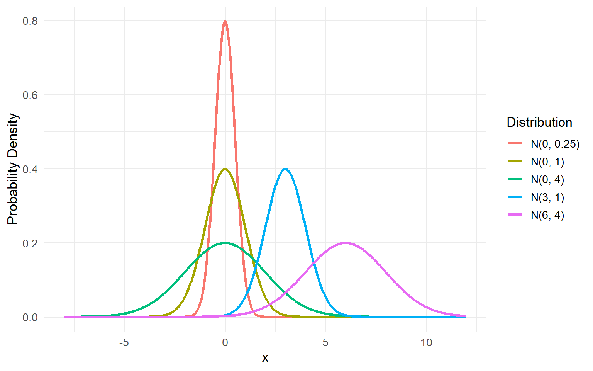
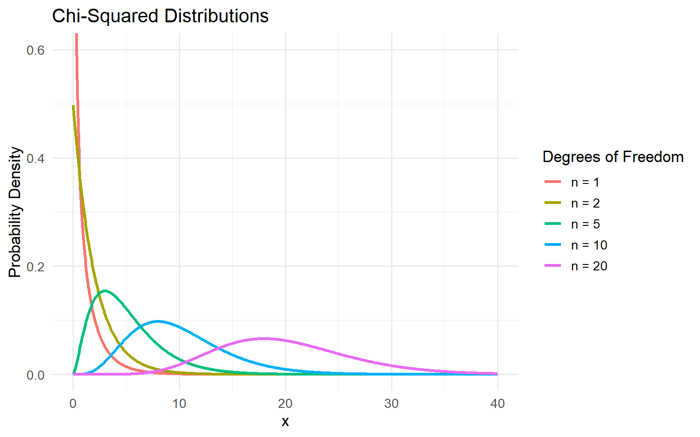
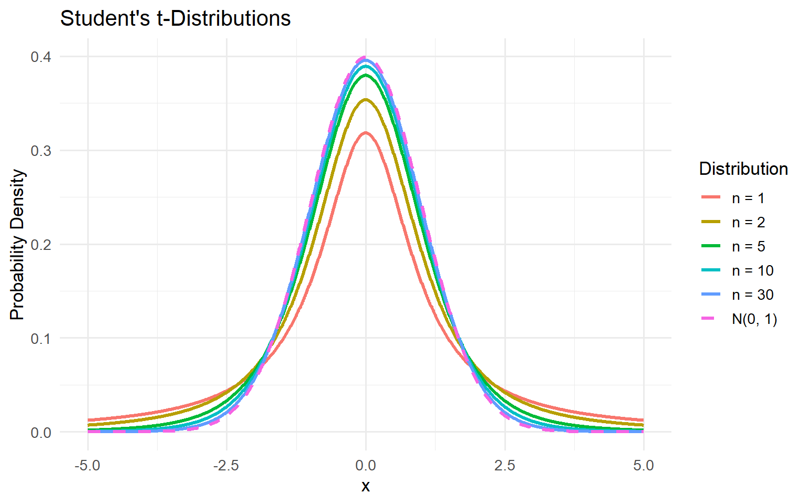
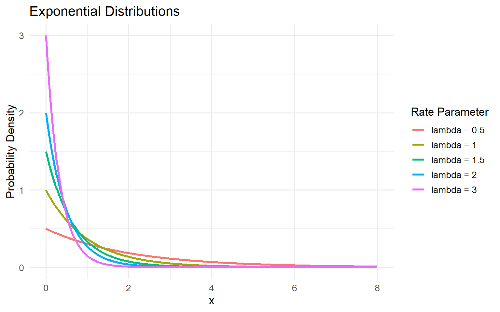
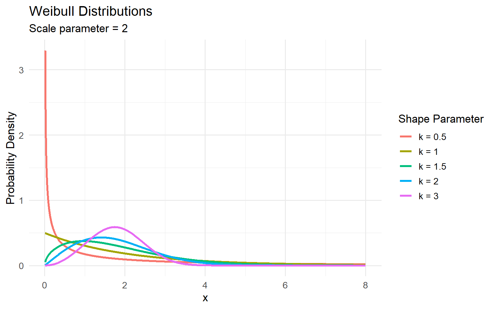
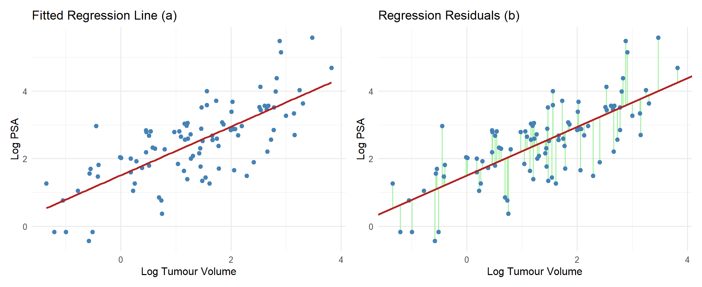
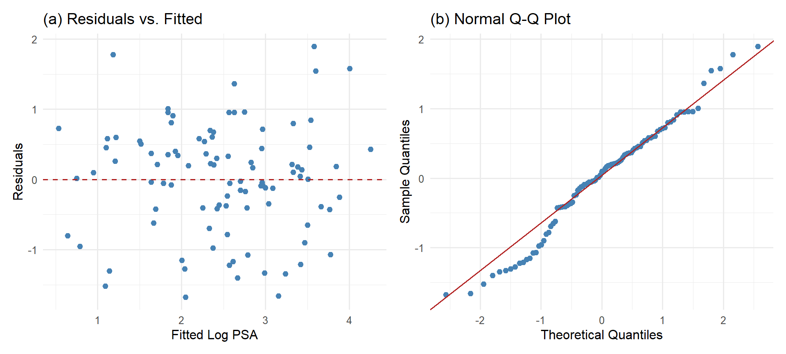

Chapter 4 Statistical Methods in Oncology
4.1 Review of Probability Distributions
Probability distributions are fundamental to statistical modelling, as they describe the likelihood of different outcomes of random processes. In oncology, probability distributions are used to model various outcomes, including whether a patient develops cancer, the number of patients who respond to a treatment, and the time until disease recurrence or death. Different statistical methods rely on different probability distributions depending on the nature of the outcome being studied.
4.1.1 Random Variables and Probability Distributions
A random variable is a function that assigns a real number to each outcome of a random experiment. Random variables may be classified as either discrete or continuous.
A discrete random variable takes values on a finite or countable infinite set. Its distribution can be described by a probability mass function (PMF),
\[ p_X(x)=P(X=x), \]
which satisfies \(p_X(x)\geq 0\) and \(\sum_x p_X(x)=1.\)
A continuous random variable takes values from an uncountable infinite set. A continuous random variable has a distribution that can be described by a probability density function (PDF), denoted by \(f_X(x)\), satisfying \(f_X(x)\geq 0\) and \(\int_{-\infty}^{\infty} f_X(x)\,dx=1.\)
For a continuous random variable, probabilities over intervals are calculated by integration. In particular,
\[ P(a\leq X\leq b)=\int_a^b f_X(x)\,dx. \]
Both discrete and continuous random variables can be described by their cumulative distribution function (CDF),
\[ F_X(x)=P(X\leq x). \]
The expected value and variance are used to describe the centre and variability of a probability distribution. The expected value of \(X\) is denoted by \(E(X)\), while its variance is defined as \(\operatorname{Var}(X)=E[(X-E(X)^2]\), the expected squared deviation from the mean.
If \(X_1, X_2,...,X_n\) be independent random variables, \[E(\sum_{i=1}^n c_i X_i)=\sum_{i=1}^n c_i E(X_i), \] and \[\operatorname{Var} (\sum_{i=1}^n c_i X_i)= \sum_{i=1}^n c_i^2 \operatorname{Var} (X_i) \]
We now introduce common discrete and continuous probability distributions and discuss their applications in oncology.
4.1.2 Discrete Probability Distributions
4.1.2.1 Bernoulli Distribution
The Bernoulli distribution describes a random experiment with two possible outcomes, typically represented by \(0\) and \(1\). It is particularly useful for modelling binary outcomes.
Let \(X\) be a Bernoulli random variable with parameter \(p\), where \(0\leq p\leq 1\). We write \(X\sim\operatorname{Bernoulli}(p).\)
The probability mass function is
\[ P(X=x)=p^x(1-p)^{1-x}, \qquad x=0,1. \]
The expected value and variance are \(E(X)=p\) and \(\operatorname{Var}(X)=p(1-p)\).
Suppose researchers are interested in whether a patient responds to a particular cancer treatment. Let \(X=1\) indicate that a patient responds to treatment and \(X=0\) indicate that the patient does not respond. If the probability of responding is \(p\), then \(X\) follows a Bernoulli distribution.
The Bernoulli distribution is particularly important in logistic regression, where the probability of a binary outcome is modelled as a function of explanatory variables.
4.1.2.2 Binomial Distribution
The binomial distribution describes the number of successes in a fixed number of independent Bernoulli trials, each with the same probability of success.
Let \(X\) denote the number of successes in \(n\) independent trials, each with probability of success \(p\). Then, \(X\sim\operatorname{Binomial}(n,p)\).
The probability mass function is
\[ P(X=x)=\binom{n}{x}p^x(1-p)^{n-x}, \qquad x=0,1,\ldots,n. \]
The expected value and variance are \(E(X)=np\) and \(\operatorname{Var}(X)=np(1-p)\).
Suppose a clinical trial involves \(100\) patients receiving a particular cancer treatment. If each patient independently responds with probability \(p=0.7\), then the number of patients who respond can be modelled as \(X\sim\operatorname{Binomial}(100,0.7)\).
The expected number of patients who respond is \(E(X)=100(0.7)=70\).
Also, the probability that at least \(80\) patients respond to the treatment is
\[ P(X \geq 80) = \sum_{x = 80}^{100} \binom{100}{x} (0.7)^x (0.3)^{100-x} \approx 0.01646285 \]
4.1.3 Continuous Probability Distributions
4.1.3.1 Normal Distribution
The normal distribution is a continuous probability distribution characterized by its symmetric, bell-shaped density function. Let \(X\) follow a normal distribution with mean \(\mu\) and variance \(\sigma^2\), where \(\sigma>0\). We write \(X\sim N(\mu,\sigma^2).\)
Its probability density function is
\[ f_X(x)=\frac{1}{\sqrt{2\pi \sigma^2}} \exp\left( -\frac{(x-\mu)^2}{2\sigma^2} \right), \qquad -\infty<x<\infty. \]
The expected value and variance are \(E(X)=\mu\) and \(\operatorname{Var}(X)=\sigma^2.\)
If \(X \sim N(\mu, sigma^2)\), then \(Z = \frac{X-\mu}{\sigma} \sim N(0,1)\). We say \(Z\) follows a standard normal distribution.
Also, if \(X_1,X_2,...,X_n\) are normal random variables, then \(\sum_{i=1}^n {c_i X_i}\) is also a normal random variable, where \(c_1,c_2,...,c_n \in \mathbb{R}\). That is, a linear combination of normal random variables is also normal.

Figure 4.1: Normal distributions with different means and variances.
4.1.3.2 Chi-Squared Distribution
Let \(Z_1,Z_2,\ldots,Z_{n}\) be independent standard normal random variables, where \(n\) is a positive integer. Then the random variable
\[ X=\sum_{i=1}^{n}Z_i^2 \]
follows a chi-squared distribution with \(n\) degrees of freedom. We write \(X\sim\chi^2_{n}.\)
Its probability density function is
\[ f_X(x)= \frac{1}{2^{n/2}\Gamma(n/2)} x^{n/2-1}e^{-x/2}, \qquad x>0, \]
where \(\Gamma(\cdot)\) denotes the gamma function.
The expected value and variance are \(E(X)=n\) and \(\operatorname{Var}(X)=2n.\)
A very useful result is that \[ \frac{(n-1)s^2}{\sigma^2} \sim \chi^2_{n-1},\] where \(s^2\) is the sample variance, and \(\sigma^2\) is the population variance.
The chi-squared distribution is nonnegative and generally right-skewed. Its shape depends on the degrees of freedom, becoming less skewed as the degrees of freedom increase.

Figure 4.2: Chi-squared distributions with different degrees of freedom.
4.1.3.3 Student’s t-Distribution
Let \(Z \sim N(0,1)\) and \(W \sim \chi^2_{n}\). Then \(X = \frac{Z}{\sqrt{\frac{W}{n}}}\) follows a Student’s t-distribution with \(n>0\) degrees of freedom. We write \(X\sim t_{n}.\)
Its probability density function is
\[ f_X(x)= \frac{\Gamma\left(\frac{n+1}{2}\right)} {\sqrt{n \pi}\Gamma\left(\frac{n}{2}\right)} \left(1+\frac{x^2}{n}\right)^{-\frac{n+1}{2}}, \qquad -\infty<x<\infty, \]
where \(\Gamma(\cdot)\) denotes the gamma function and \(n\) represents the degrees of freedom.
The expected value is \(E(X)=0,\qquad n>1,\) and the variance is \(\operatorname{Var}(X)=\frac{n}{n-2},\qquad n>2.\)
The Student’s t-distribution is a continuous probability distribution that is symmetric about zero and resembles the standard normal distribution. However, the t-distribution has heavier tails, allowing for greater variability and more extreme observations. The shape of the Student’s t-distribution depends on its degrees of freedom, denoted by \(n\). For smaller values of \(n\), the distribution has heavier tails and a lower peak compared to the standard normal distribution. As \(n\) increases, the tails become lighter and the distribution approaches the standard normal distribution. In particular, as \(n\to\infty\), the Student’s t-distribution converges in distribution to \(N(0,1)\).

Figure 4.3: Student’s t-distributions with different degrees of freedom, compared with the standard normal distribution.
It is particularly useful for statistical inference when the population variance is unknown. In linear regression, t-tests are commonly used to determine whether regression coefficients differ significantly from zero. For example, researchers may use a t-test to investigate whether a patient’s age is significantly associated with tumour size after accounting for other explanatory variables. We discuss this in further detail later in the chapter.
4.1.3.4 Exponential Distribution
The exponential distribution is a continuous probability distribution frequently used to model waiting times until an event of interest occurs.
Let \(X\) follow an exponential distribution with rate parameter \(\lambda>0\). We write \(X\sim\operatorname{Exponential}(\lambda).\)
Its probability density function is
\[ f_X(x)=\lambda e^{-\lambda x}, \qquad x\geq 0. \]
The expected value and variance are \(E(X)=\frac{1}{\lambda}\) and \(\operatorname{Var}(X)=\frac{1}{\lambda^2}.\)
The shape of the exponential distribution depends on its rate parameter, denoted by \(\lambda\). As \(\lambda\) increases, the probability density decreases more rapidly, indicating that shorter waiting times become more likely. Conversely, smaller values of \(\lambda\) correspond to longer expected waiting times.

Figure 4.4: Exponential distributions with different rate parameters.
Moreover, the exponential distribution is important in survival analysis because it assumes a constant hazard function, \(h(t)=\lambda.\) Suppose researchers are interested in the time between cancer diagnosis and disease recurrence. Under the assumption that the instantaneous recurrence rate remains constant over time, the time until recurrence may be modelled using an exponential distribution. We discuss hazard functions in more detail later in the chapter.
4.1.3.5 Weibull Distribution
The Weibull distribution is a continuous probability distribution commonly used to model time-to-event data. Unlike the exponential distribution, the Weibull distribution can accommodate hazard functions that increase or decrease over time.
Let \(X\) follow a Weibull distribution with shape parameter \(k>0\) and scale parameter \(\lambda>0\). We write \(X\sim\operatorname{Weibull}(k,\lambda).\)
Its probability density function is
\[ f_X(x)= \frac{k}{\lambda} \left(\frac{x}{\lambda}\right)^{k-1} \exp\left[-\left(\frac{x}{\lambda}\right)^k\right], \qquad x\geq 0. \]
The expected value and variance are \(E(X)=\lambda\Gamma\left(1+\frac{1}{k}\right)\) and \(\operatorname{Var}(X)=\lambda^2\left[\Gamma\left(1+\frac{2}{k}\right)-\Gamma^2\left(1+\frac{1}{k}\right)\right]\)
where \(\Gamma(\cdot)\) denotes the gamma function.

Figure 4.5: Weibull distributions with different shape parameters and a fixed scale parameter.
The Weibull distribution may be used to model the time from cancer diagnosis to death or disease recurrence when the risk of experiencing the event changes over time. For example, the Weibull distribution may be appropriate when the risk of recurrence decreases as time passes after treatment, provided that this pattern is supported by the observed data.
4.2 Simple Linear Regression
Regression analysis is a statistical method used to study relationships between a response variable and one or more explanatory variables. In oncology, regression models can be used to study relationships between patient characteristics, treatment-related factors, and clinical outcomes.
Simple linear regression (SLR) examines the relationship between a continuous response variable and an explanatory variable by assuming that their relationship is linear. Understanding SLR provides a foundation for more complex statistical models, including multiple linear regression and logistic regression.
4.2.1 The Simple Linear Regression Model
Let \(Y_i\) denote the response variable for observation \(i\) and let \(x_i\) denote the corresponding explanatory variable. The simple linear regression model is defined as
\[ Y_i=\beta_0+\beta_1x_i+\varepsilon_i, \qquad i=1,\ldots,n, \]
where:
- \(Y_i\) is the response variable for observation \(i\).
- \(x_i\) is the explanatory variable for observation \(i\).
- \(\beta_0\) is the population intercept.
- \(\beta_1\) is the population slope.
- \(\varepsilon_i\) is the random error associated with observation \(i\).
- \(n\) is the number of observations.
The population regression coefficients \(\beta_0\) and \(\beta_1\) are generally unknown and must be estimated using observed data. Their estimates are denoted by \(\hat{\beta}_0\) and \(\hat{\beta}_1\), respectively.
The fitted regression equation is \(\hat{Y}_i=\hat{\beta}_0+\hat{\beta}_1x_i,\) where \(\hat{Y}_i\) represents the predicted value of the response variable for observation \(i\).
Note that a linear association between the response and explanatory variables does not imply a causal relationship between them.
To illustrate the application of simple linear regression in oncology, we consider prostate cancer dataset available in the faraway package in R. The dataset contains clinical measurements from 97 men with prostate cancer, including tumour volume, prostate-specific antigen (PSA) levels, age, and other patient characteristics. PSA is a protein produced by cells in the prostate gland, and its concentration in the blood is commonly used in the assessment and monitoring of prostate cancer.
We are interested in investigating the relationship between tumour volume and PSA levels. Since both variables are right-skewed, we consider their logarithmic transformations, which provide a more suitable basis for linear regression. Let \(X_i\) denote the log tumour volume and \(Y_i\) denote the log PSA level of patient \(i\). Below are the values for PSA levels and tumour values for the 97 men, and plots of the relationship between them.
| Patient | Log Volume | Log PSA | Patient | Log Volume | Log PSA | Patient | Log Volume | Log PSA |
|---|---|---|---|---|---|---|---|---|
| 1 | -0.580 | -0.431 | 34 | 0.010 | 2.022 | 67 | 2.023 | 2.920 |
| 2 | -0.994 | -0.163 | 35 | -0.010 | 2.048 | 68 | 2.198 | 2.963 |
| 3 | -0.511 | -0.163 | 36 | 1.308 | 2.086 | 69 | -0.446 | 2.963 |
| 4 | -1.204 | -0.163 | 37 | 1.423 | 2.158 | 70 | 1.194 | 2.973 |
| 5 | 0.751 | 0.372 | 38 | 0.457 | 2.192 | 71 | 1.864 | 3.013 |
| 6 | -1.050 | 0.765 | 39 | 2.661 | 2.214 | 72 | 1.160 | 3.037 |
| 7 | 0.737 | 0.765 | 40 | 0.798 | 2.277 | 73 | 1.215 | 3.056 |
| 8 | 0.693 | 0.854 | 41 | 0.621 | 2.298 | 74 | 1.839 | 3.075 |
| 9 | -0.777 | 1.047 | 42 | 1.442 | 2.308 | 75 | 2.999 | 3.275 |
| 10 | 0.223 | 1.047 | 43 | 0.582 | 2.327 | 76 | 3.141 | 3.338 |
| 11 | 0.255 | 1.267 | 44 | 1.772 | 2.375 | 77 | 2.011 | 3.393 |
| 12 | -1.347 | 1.267 | 45 | 1.486 | 2.522 | 78 | 2.538 | 3.436 |
| 13 | 1.613 | 1.267 | 46 | 1.664 | 2.553 | 79 | 2.648 | 3.458 |
| 14 | 1.477 | 1.348 | 47 | 2.728 | 2.569 | 80 | 2.779 | 3.513 |
| 15 | 1.206 | 1.399 | 48 | 1.163 | 2.569 | 81 | 1.468 | 3.516 |
| 16 | 1.541 | 1.447 | 49 | 1.746 | 2.592 | 82 | 2.514 | 3.531 |
| 17 | -0.416 | 1.470 | 50 | 1.221 | 2.592 | 83 | 2.613 | 3.565 |
| 18 | 2.288 | 1.493 | 51 | 1.092 | 2.657 | 84 | 2.678 | 3.571 |
| 19 | -0.562 | 1.558 | 52 | 1.660 | 2.678 | 85 | 1.562 | 3.588 |
| 20 | 0.182 | 1.599 | 53 | 0.513 | 2.684 | 86 | 3.303 | 3.631 |
| 21 | 1.147 | 1.639 | 54 | 2.127 | 2.691 | 87 | 2.024 | 3.680 |
| 22 | 2.059 | 1.658 | 55 | 3.154 | 2.705 | 88 | 1.732 | 3.712 |
| 23 | -0.545 | 1.696 | 56 | 1.267 | 2.718 | 89 | 2.808 | 3.984 |
| 24 | 1.782 | 1.714 | 57 | 0.975 | 2.788 | 90 | 1.562 | 3.994 |
| 25 | 0.385 | 1.732 | 58 | 0.464 | 2.794 | 91 | 3.246 | 4.030 |
| 26 | 1.447 | 1.766 | 59 | 0.542 | 2.806 | 92 | 2.533 | 4.130 |
| 27 | 0.513 | 1.800 | 60 | 1.061 | 2.812 | 93 | 2.830 | 4.385 |
| 28 | -0.400 | 1.816 | 61 | 0.457 | 2.842 | 94 | 3.821 | 4.684 |
| 29 | 1.040 | 1.848 | 62 | 1.997 | 2.854 | 95 | 2.907 | 5.143 |
| 30 | 2.410 | 1.895 | 63 | 2.776 | 2.854 | 96 | 2.883 | 5.478 |
| 31 | 0.285 | 1.924 | 64 | 2.035 | 2.882 | 97 | 3.472 | 5.583 |
| 32 | 0.182 | 2.008 | 65 | 2.073 | 2.882 | NA | NA | NA |
| 33 | 1.275 | 2.008 | 66 | 1.459 | 2.888 | NA | NA | NA |

Figure 4.6: Relationship between log tumour volume and log PSA levels, with the fitted regression line and associated residuals.
Figure (a) illustrates the fitted least squares regression line, which describes the estimated linear relationship between log tumour volume and log PSA levels. Each point represents an observed log PSA level for a given log tumour volume, while the red line represents the predicted log PSA level. Figure (b) additionally displays the residuals, represented by the green vertical segments. Each residual measures the difference between an observed log PSA level and its predicted value under the fitted regression model.
We demonstrate how to obtain the fitted regression line and to further analyse if a linear association between log tumour volume and log PSA levels is statistically significant.
4.2.2 Least Squares Estimation
To fit a simple linear regression model, we must estimate the unknown parameters \(\beta_0\) and \(\beta_1\).
One of the most commonly used estimation methods is ordinary least squares (OLS), which determines the regression coefficients by minimizing the sum of squared residuals.
A residual is the difference between an observed response and its predicted value. For observation \(i\), the residual is defined as
\[ e_i=Y_i-\hat{Y}_i. \]
Substituting the fitted regression equation gives
\[ e_i=Y_i-\hat{\beta}_0-\hat{\beta}_1x_i. \]
The residual sum of squares is defined by
\[ Q= \sum_{i=1}^{n}(Y_i-\beta_0-\beta_1x_i)^2. \]
The objective of ordinary least squares is to find values of \(\beta_0\) and \(\beta_1\) that minimize \(Q\).
We begin with
\[ Q= \sum_{i=1}^{n}(Y_i-\beta_0-\beta_1x_i)^2. \]
Taking the partial derivative with respect to \(\beta_0\) gives
\[ \frac{\partial Q}{\partial\beta_0} = -2\sum_{i=1}^{n}(Y_i-\beta_0-\beta_1x_i). \]
Setting this derivative equal to zero and evaluating at the least squares estimates,
\[ \sum_{i=1}^{n} (Y_i-\hat{\beta}_0-\hat{\beta}_1x_i)=0. \]
Expanding,
\[ \sum_{i=1}^{n}Y_i -n\hat{\beta}_0 -\hat{\beta}_1\sum_{i=1}^{n}x_i=0. \]
Rearranging and dividing by \(n\), we get,
\[ \boxed{ \hat{\beta}_0=\bar{Y}-\hat{\beta}_1\bar{x} } \]
where \(\bar{Y}=\frac{1}{n}\sum_{i=1}^{n}Y_i\) and \(\bar{x}=\frac{1}{n}\sum_{i=1}^{n}x_i.\)
Now, taking the partial derivative with respect to \(\beta_1\) gives
\[ \frac{\partial Q}{\partial\beta_1} = -2\sum_{i=1}^{n} x_i(Y_i-\beta_0-\beta_1x_i). \]
Setting this derivative equal to zero,
\[ \sum_{i=1}^{n} x_i(Y_i-\hat{\beta}_0-\hat{\beta}_1x_i)=0. \]
Substituting the expression for \(\hat{\beta}_0\),
\[ \sum_{i=1}^{n} x_i \left[ Y_i-\bar{Y} +\hat{\beta}_1\bar{x} -\hat{\beta}_1x_i \right]=0. \]
Rearranging,
\[ \sum_{i=1}^{n}x_i(Y_i-\bar{Y}) = \hat{\beta}_1 \sum_{i=1}^{n}x_i(x_i-\bar{x}). \]
we obtain
\[ \boxed{ \hat{\beta}_1= \frac{ \sum_{i=1}^{n}(x_i-\bar{x})(Y_i-\bar{Y}) }{ \sum_{i=1}^{n}(x_i-\bar{x})^2 } }, \] Since \(\sum_{i=1}^{n}x_i(Y_i-\bar{Y}) = \sum_{i=1}^{n}(x_i-\bar{x})(Y_i-\bar{Y})\) and \(\sum_{i=1}^{n}x_i(x_i-\bar{x})=\sum_{i=1}^{n}(x_i-\bar{x})^2.\)
Therefore, the least squares estimators are
\[ \boxed{ \hat{\beta}_1= \frac{ \sum_{i=1}^{n}(x_i-\bar{x})(Y_i-\bar{Y}) }{ \sum_{i=1}^{n}(x_i-\bar{x})^2 } = \frac{S_{xy}}{S_{xx}} } \]
and
\[ \boxed{ \hat{\beta}_0=\bar{Y}-\hat{\beta}_1\bar{x}. }, \] where \(S_{xx}=\sum_{i=1}^{n}(x_i-\bar{x})^2\) and \(S_{xy}=\sum_{i=1}^{n}(x_i-\bar{x})(Y_i-\bar{Y})\).
Substituting these estimates into the regression equation gives the fitted model
\[ \hat{Y}_i=\hat{\beta}_0+\hat{\beta}_1x_i. \]
We wish to fit the prostate cancer data. Using Table 4.1, we obtain \(\bar{x}= 1.35001,\) \(\bar{y}= 2.478387,\) \(S_{xx}= 133.359,\) and \(S_{xy}= 95.92784\).
Plugging these values into the OLS estimators for \(\beta_0\) and \(\beta_1\), we get \[ \hat{\beta_1} = \frac{S_{xy}}{S_{xx}}=\frac{95.92784}{133.359} \approx 0.7193 \] \[ \hat{\beta_0}= \bar{Y}- \hat{\beta_1}\bar{x}= 2.478387 - (0.7193)(1.35001) \approx 1.5073 \] Hence, the estimated regression line is \(\boxed{\hat{Y_i} = 1.5073 + 0.7193x_i}\)
4.2.3 Interpretation of Regression Coefficients
After estimating the regression coefficients, it is important to interpret their values in the context of the research question.
The intercept \(\beta_0\) represents the expected value of the response variable when the explanatory variable is zero.
The slope \(\beta_1\) represents the change in the expected response variable associated with a one-unit increase in the explanatory variable. A positive slope indicates that the expected response increases as the explanatory variable increases, while a negative slope indicates that the expected response decreases.
Using the prostate cancer dataset, we obtain the following fitted regression model:
\[ \widehat{\log(\text{PSA})} = 1.5073+0.7193\log(\text{Tumour Volume}), \]
where PSA denotes prostate-specific antigen levels and tumour volume is measured in \(\text{cm}^3\).
The estimated intercept is \(\hat{\beta}_0=1.5073\), indicating that when tumour volume is \(1\text{ cm}^3\), the predicted log PSA level is \(1.5073\). Exponentiating, we obtain \(e^{1.5073}\approx 4.51\). Thus, when tumour volume is \(1\text{ cm}^3\), the model predicts a PSA level of approximately \(4.51\) on the original scale.
The estimated slope is \(\hat{\beta}_1=0.7193\). Since both variables are logarithmically transformed, a \(1\%\) increase in tumour volume is associated with an approximately \(0.7193\%\) increase in the predicted PSA level, according to the fitted model.
For example, a patient with a tumour volume of \(5\text{ cm}^3\) would have a predicted log PSA level of
\[ \widehat{\log(\text{PSA})} =1.5073+0.7193\log(5) \approx 2.665. \]
Exponentiating gives
\[ \widehat{\text{PSA}}=e^{2.665}\approx 14.37. \]
Thus, the model predicts a median PSA level of approximately \(14.37\) on the original scale for a patient with a tumour volume of \(5\text{ cm}^3\).
4.2.4 Assumptions of Simple Linear Regression
To interpret the regression model appropriately and perform statistical inference, several assumptions regarding the relationship between the variables and the behaviour of the error terms must be considered. Since the true errors are unobservable, residuals are commonly used to assess whether these assumptions are reasonable.
1. Linearity
The expected response is assumed to be a linear function of the explanatory variable. If the true relationship is nonlinear, the linear model may provide an inadequate description of the data.
Linearity can be assessed using a scatterplot of the response against the explanatory variable, or a plot of residuals against fitted values. If the linearity assumption is reasonable, the residuals should be randomly scattered around zero without a systematic pattern. A pattern may indicate that a nonlinear model is more appropriate.
For the prostate cancer dataset, the scatterplot in Figure 4.6 suggests a positive relationship between log tumour volume and log PSA levels. The residual plot in Figure 4.7 appears to be randomly scattered, thus the linearity assumption appears reasonable.
2. Independence
The error terms are assumed to be independent across observations.
Independence is primarily assessed by examining how the data were collected. This assumption may be violated when repeated measurements are collected from the same patient, or when observations are correlated due to shared characteristics or clinical settings.
For the prostate cancer dataset, each observation corresponds to a different patient, so the independence assumption appears reasonable.
3. Constant Variance (Homoscedasticity)
The variance of the errors is assumed to be constant across all values of the explanatory variable. If the variability of the errors changes with the explanatory variable, the model exhibits heteroscedasticity.
This assumption can be assessed using a plot of residuals against fitted values. Under constant variance, the vertical spread of the residuals should remain approximately the same across the range of fitted values.
For the prostate cancer dataset, the spread of residuals appears relatively consistent across fitted values in Figure 4.7, suggesting that the constant variance assumption is reasonable.
4. Normality of Errors
The error terms are assumed to follow a normal distribution. That is, \(\varepsilon_i\sim N(0,\sigma^2).\) Note that the normality assumption is not required to calculate the least squares estimates. However, it is used to justify hypothesis tests and confidence intervals.
Normality can be assessed using a normal Q-Q plot of the residuals. If the errors are approximately normally distributed, the points should lie reasonably close to the reference line. Substantial departures from this line may indicate violations of normality.
We may also use the Shapiro-Wilk test, which is a statistical test used to assess whether a sample is consistent with a normal distribution. The null hypothesis states that the errors follow a normal distribution, while the alternative hypothesis states that the errors do not follow a normal distribution. A p-value less than 0.05 suggests evidence against normality, while a p-value greater than 0.05 indicates insufficient evidence to reject normality.
For the prostate cancer dataset, the normal Q-Q plot in Figure 4.7 shows that most residuals lie reasonably close to the reference line, with some deviations in the tails. The Shapiro-Wilk test results in a p-value of 0.1419, failing to reject the alternative. Thus, the normality assumption appears reasonable for this example, though not perfect.
Overall, the diagnostic results suggest that the assumptions of simple linear regression are reasonably plausible for the log-transformed prostate cancer dataset, although some minor deviations are present.

Figure 4.7: Diagnostic plots for the regression model relating log tumour volume to log PSA levels.
4.2.5 Coefficient of Determination (\(R^2\))
After fitting a simple linear regression model, it is important to evaluate how well the fitted regression line describes the observed data. One commonly used measure of model fit is the coefficient of determination, denoted by \(R^2\). To define \(R^2\), we first decompose the total variability in the response variable into variability explained by the regression model and unexplained residual variability.
The total sum of squares (SST) measures the total observed variability in the response variable about its sample mean:
\[ SST=\sum_{i=1}^{n}(Y_i-\bar{Y})^2. \]
The regression sum of squares (SSR) measures the variability accounted for by the fitted regression model:
\[ SSR=\sum_{i=1}^{n}(\hat{Y}_i-\bar{Y})^2. \]
The error sum of squares (SSE), also referred to as the residual sum of squares, measures the variability not explained by the fitted regression model:
\[ SSE=\sum_{i=1}^{n}(Y_i-\hat{Y}_i)^2. \]
The identity \(SST=SSR+SSE\) can be established algebraically using the properties of the least squares estimators. We omit the derivation here for conciseness.
The coefficient of determination is defined as the proportion of total observed variability in the response variable accounted for by the fitted regression model:
\[ \boxed {R^2=\frac{SSR}{SST} = 1-\frac{SSE}{SST}}. \]
Notice that \(0\leq R^2\leq 1\)
An \(R^2\) value closer to one indicates that the fitted regression model accounts for a greater proportion of the observed variability in the response variable. Conversely, an \(R^2\) value closer to zero indicates that the model accounts for relatively little of the observed variability.
Using the prostate cancer data in Table 4.1, we can compute \(SSE = 58.91476\) and \(SST = 127.9176\). We get that \(R^2 = 1 - \frac{58.91476}{127.9176}= 0.5394319\). This indicates that approximately \(53.94\%\) of the total variation in log PSA levels is explained by the linear relationship with log tumour volume. The remaining \(46.06\%\) of the variation is not explained by the model and may be associated with other factors or random variability.
4.2.6 Statistical Inference in Simple Linear Regression
Least squares estimation provides estimates of the unknown regression coefficients \(\beta_0\) and \(\beta_1\). However, these estimates are calculated from a sample and are therefore subject to sampling variability. Statistical inference allows us to quantify this uncertainty and draw conclusions about the population regression parameters.
Recall the simple linear regression model
\[ Y_i=\beta_0+\beta_1x_i+\varepsilon_i, \qquad i=1,\ldots,n, \]
where the explanatory variable values \(x_1,\ldots,x_n\) are treated as fixed, and the error terms are assumed to be independent and identically distributed according to \(\varepsilon_i\sim N(0,\sigma^2)\). Consequently,\(Y_i\sim N(\beta_0+\beta_1x_i,\sigma^2).\)
4.2.6.1 Sampling Distribution of the Slope Estimator
Recall that the least squares estimator of the slope is
\[ \hat{\beta}_1= \frac{S_{xy}}{S_{xx}} = \frac{\sum_{i=1}^{n}(x_i-\bar{x})(Y_i-\bar{Y})} {\sum_{i=1}^{n}(x_i-\bar{x})^2}, \]
We can express \(\hat{\beta}_1\) as a linear combination of the response variables \(Y_1,\ldots,Y_n\).
Define
\[ c_i=\frac{x_i-\bar{x}}{S_{xx}}. \]
Then,
\[ \begin{aligned} \hat{\beta}_1 &=\frac{1}{S_{xx}} \sum_{i=1}^{n}(x_i-\bar{x})(Y_i-\bar{Y})\\ &=\frac{1}{S_{xx}} \left[ \sum_{i=1}^{n}(x_i-\bar{x})Y_i -\bar{Y}\sum_{i=1}^{n}(x_i-\bar{x}) \right]. \end{aligned} \]
Since \(\sum_{i=1}^{n}(x_i-\bar{x})=0,\) we obtain
\[ \hat{\beta}_1 =\sum_{i=1}^{n}\frac{x_i-\bar{x}}{S_{xx}}Y_i = \sum_{i=1}^{n}c_iY_i. \]
Since \(\hat{\beta}_1\) is a linear combination of independent normally distributed random variables, it also follows a normal distribution.
The expectation of \(\hat{\beta}_1\) can be found as follows:
\[ \begin{aligned} E[\hat{\beta}_1] &=E\left[\sum_{i=1}^{n}c_iY_i\right]\\ &=\sum_{i=1}^{n}c_iE[Y_i]\\ &=\sum_{i=1}^{n}c_i(\beta_0+\beta_1x_i)\\ &=\beta_0\sum_{i=1}^{n}c_i +\beta_1\sum_{i=1}^{n}c_ix_i\\ &= \beta_1 \end{aligned} \]
Since \[ \begin{aligned} \sum_{i=1}^{n}c_i &=\sum_{i=1}^{n}\frac{x_i-\bar{x}}{S_{xx}}\\ &=\frac{1}{S_{xx}} \left(\sum_{i=1}^{n}x_i-n\bar{x}\right)\\ &=0, \end{aligned} \]
and
\[ \begin{aligned} \sum_{i=1}^{n}c_ix_i &=\sum_{i=1}^{n} \frac{x_i(x_i-\bar{x})}{S_{xx}}\\ &=\frac{1}{S_{xx}} \sum_{i=1}^{n} \left[(x_i-\bar{x})+\bar{x}\right] (x_i-\bar{x})\\ &=\frac{1}{S_{xx}} \left[ \sum_{i=1}^{n}(x_i-\bar{x})^2 +\bar{x}\sum_{i=1}^{n}(x_i-\bar{x}) \right]\\ &=\frac{S_{xx}}{S_{xx}}\\ &=1. \end{aligned} \]
Hence,
\[ \boxed{E[\hat{\beta}_1]=\beta_1.} \]
Next, we derive the variance of \(\hat{\beta}_1\).
Since the observations are independent and \(\operatorname{Var}(Y_i)=\sigma^2\),
\[ \begin{aligned} \operatorname{Var}(\hat{\beta}_1) &=\operatorname{Var}\left( \sum_{i=1}^{n}c_iY_i \right)\\ &=\sum_{i=1}^{n}c_i^2\operatorname{Var}(Y_i)\\ &=\sigma^2\sum_{i=1}^{n}c_i^2. \end{aligned} \] Also,
\[ \begin{aligned} \sum_{i=1}^{n}c_i^2 &=\sum_{i=1}^{n} \frac{(x_i-\bar{x})^2}{S_{xx}^2}\\ &=\frac{1}{S_{xx}^2} \sum_{i=1}^{n}(x_i-\bar{x})^2\\ &=\frac{S_{xx}}{S_{xx}^2}\\ &=\frac{1}{S_{xx}}. \end{aligned} \]
Hence,
\[ \boxed{ \operatorname{Var}(\hat{\beta}_1) =\frac{\sigma^2}{S_{xx}}. } \]
Since \(\hat{\beta}_1\) is normally distributed, with expected value \(\beta_1\) and variance \(\sigma^2/S_{xx}\), we conclude that
\[ \boxed{ \hat{\beta}_1\sim N\left(\beta_1,\frac{\sigma^2}{S_{xx}}\right). } \]
4.2.6.2 Hypothesis Testing and Confidence Intervals for the Slope
A common objective in regression analysis is to determine whether the explanatory variable has a statistically significant linear association with the response variable.
To do this, we may test the hypotheses \(H_0:\beta_1=0\) against \(H_1:\beta_1\neq 0.\)
We wish to use the sampling distribution derived above, however \(\sigma^2\) is usually unknown. It can be shown that \(\hat{\sigma^2} = \frac{SSE}{n-2}\) is an unbiased estimator for \(\sigma^2\). We omit the proof for conciseness. Thus, we estimate \(\sigma^2\) with \(\hat{\sigma}^2\).
Further, it can be shown that \(\frac{SSE}{\sigma^2} \sim \chi^2_{n-2}\). The proof is beyond the scope of the text.
Consider \(T=\frac{\hat{\beta_1}-\beta_1}{\sqrt{\frac{\hat{\sigma}^2}{S_{xx}}}}\). Dividing the numerator and denominator by \(\frac{\sigma}{\sqrt {S_{xx}}}\), we get \[ T= \frac {\frac{\hat{\beta_1}- \beta_1}{\frac{\sigma}{\sqrt {S_{xx}}}}} {\sqrt{\frac{\hat{\sigma}^2}{\sigma^2}}} \] Since \(\hat{\beta_1} \sim N(\beta_1, \frac{\sigma^2}{S_{xx}} )\), \(\frac{\hat{\beta_1}- \beta_1}{\frac{\sigma}{\sqrt {S_{xx}}}} \sim N(0,1).\)
Also, \(\sqrt{\frac{\hat{\sigma}^2}{\sigma^2}} = \sqrt{\frac{SSE}{(n-2)\sigma^2}}\). Since \(\frac{SSE}{\sigma^2} \sim \chi^2_{n-2}\), it follows that \(T \sim t_{n-2}\).
That is, \[T=\frac{\hat{\beta_1}-\beta_1}{\sqrt{\frac{\hat{\sigma}^2}{S_{xx}}}} \sim t_{n-2}\]
Under \(H_0\), we substitute \(\beta_1=0\) to obtain the test statistic
\[ \boxed{T^*=\frac{\hat{\beta_1}}{\sqrt{\frac{\hat{\sigma}^2}{S_{xx}}}} } \]
Under the null hypothesis, \(T^*\sim t_{n-2}.\)
Rejecting \(H_0:\beta_1=0\) provides statistical evidence of a linear association between the explanatory and response variables under the assumptions of the regression model. However, statistical significance does not necessarily imply practical significance or a causal relationship.
For a confidence level of \(100(1-\alpha)\%\), we have
\[ P\left( -t_{n-2,1-\alpha/2} \leq \frac{\hat{\beta}_1-\beta_1}{\sqrt{\frac{\hat{\sigma}^2}{S_{xx}}}} \leq t_{n-2,1-\alpha/2} \right)=1-\alpha. \]
Multiplying through by the positive standard error,
\[ P\left( -t_{n-2,1-\alpha/2}\sqrt{\frac{\hat{\sigma}^2}{S_{xx}}} \leq \hat{\beta}_1-\beta_1 \leq t_{n-2,1-\alpha/2}\sqrt{\frac{\hat{\sigma}^2}{S_{xx}}} \right)=1-\alpha. \]
Rearranging to isolate \(\beta_1\),
\[ P\left( \hat{\beta}_1-t_{n-2,1-\alpha/2}\sqrt{\frac{\hat{\sigma}^2}{S_{xx}}} \leq\beta_1\leq \hat{\beta}_1+t_{n-2,1-\alpha/2}\sqrt{\frac{\hat{\sigma}^2}{S_{xx}}} \right)=1-\alpha. \]
Therefore, a \(100(1-\alpha)\%\) confidence interval for \(\beta_1\) is
\[ \boxed{ \hat{\beta}_1 \pm t_{n-2,1-\alpha/2} \frac{\hat{\sigma}}{\sqrt{S_{xx}}}. } \] Suppose we wanted to test \(H_0:\beta_1=0\) against \(H_1:\beta_1\neq 0\) for the prostate cancer data, at the \(0.05\) significance level. Recall, \(\hat{\beta_1} = 0.7193\), \(S_{xx}= 133.359\), and \(SSE = 58.91476\). Also, \(n=97\), so \(\hat{\sigma}^2 = \frac{58.91476}{95} \approx 0.6202.\) Putting this together,
\[T^* = \frac{0.7193}{\sqrt{\frac{0.6202}{133.359}}} \approx 10.5476. \] For a \(t\) distribution with \(95\) degrees of freedom, the rejection region is \(R^* = \{T : |T| > 1.985\}\)
Since \(T^* \in R^*\), we reject the null in favour of the alternative. That is, we have statistically significant evidence that there is a linear association between log PSA levels and log tumour volume.
A 95% confidence interval for \(\beta_1\) is \[ 0.7193 \pm 1.985 {\sqrt{\frac{0.6202}{133.359}}} = \boxed {(0.5839, 0.8547).} \] We are \(95\%\) confident that the true population slope lies between \(0.5839\) and \(0.8547\). Since both variables are logarithmically transformed, this suggests that a 1% increase in tumour volume is associated with an approximately \(0.5839\%\) to \(0.8547\%\) increase in PSA levels, on average.
Furthermore, since the confidence interval contains strictly positive values, there is evidence of a statistically significant positive linear relationship between log tumour volume and log PSA levels at the \(5\%\) significance level, further verifying the result found in our hypothesis test.
4.3 Logistic Regression
Simple linear regression is used to model the relationship between a continuous response variable and an explanatory variable. However, many applications in oncology involve a binary outcome, such as whether a tumour is malignant or benign, whether a patient responds to a treatment, or whether a cancer recurs during a specified follow-up period.
Logistic regression is a statistical method used to model the relationship between a binary response variable and one or more explanatory variables. A binary response variable takes only two possible values, typically denoted as \(0\) and \(1\). Unlike simple linear regression, which directly models the expected value of the response variable, logistic regression models the probability that the response variable equals \(1\).
4.3.1 The Logistic Regression Model
Let \(Y_i\) denote the binary response variable for observation \(i\) and let \(x_i\) denote the corresponding explanatory variable. The response variable follows a Bernoulli distribution with parameter \(p_i=P(Y_i=1\mid x_i)\), where \(p_i\) is the probability of observing a success given \(x_i\). The simple logistic regression model is defined as
\[ \log\left(\frac{p_i}{1-p_i}\right)=\beta_0+\beta_1x_i, \qquad i=1,\ldots,n, \]
or equivalently,
\[ p_i=\frac{\exp(\beta_0+\beta_1x_i)}{1+\exp(\beta_0+\beta_1x_i)}, \]
where:
- \(Y_i\) is the binary response variable for observation \(i\), taking values \(0\) or \(1\),
- \(x_i\) is the explanatory variable for observation \(i\),
- \(p_i\) is the probability that \(Y_i=1\), given \(x_i\),
- \(\beta_0\) is the population intercept,
- \(\beta_1\) is the population slope,
- \(n\) is the number of observations.
The population regression coefficients \(\beta_0\) and \(\beta_1\) are generally unknown and must be estimated using observed data. Their estimates are denoted by \(\hat{\beta}_0\) and \(\hat{\beta}_1\), respectively.
The fitted logistic regression equation is
\[ \hat{p}_i=\frac{\exp(\hat{\beta}_0+\hat{\beta}_1x_i)}{1+\exp(\hat{\beta}_0+\hat{\beta}_1x_i)}, \]
where \(\hat{p}_i\) represents the predicted probability that \(Y_i=1\) for observation \(i\).
Note that an association between the response and explanatory variables does not imply a causal relationship between them.
In logistic regression, the odds of success are defined as the ratio of the probability of success to the probability of failure. That is,
\[ \text{Odds}=\frac{p_i}{1-p_i}. \]
Unlike probabilities, which range from \(0\) to \(1\), odds range from \(0\) to infinity. Odds greater than \(1\) indicate that success is more likely than failure, while odds less than \(1\) indicate that failure is more likely than success.
Notice that logistic regression models the logarithm of the odds as a linear function of the explanatory variable.
4.3.2 Estimation of Regression Coefficients
Unlike simple linear regression, where the regression coefficients are estimated using the method of least squares, logistic regression uses the method of maximum likelihood estimation (MLE). This method estimates the unknown parameters by finding the values that maximize the likelihood of observing the given data.
The likelihood function describes how likely the observed data are for different values of the unknown parameters. Suppose \(Y_1,Y_2,\ldots,Y_n\) are independent Bernoulli random variables, where \(Y_i\sim\operatorname{Bernoulli}(p_i)\). The probability mass function of \(Y_i\) is given by
\[ P(Y_i=y_i)=p_i^{y_i}(1-p_i)^{1-y_i},\qquad y_i = 0,1. \]
Assuming independence, the likelihood function is
\[ L(\beta_0,\beta_1)=\prod_{i=1}^n p_i^{y_i}(1-p_i)^{1-y_i}. \]
Since \(p_i=\frac{\exp(\beta_0+\beta_1x_i)}{1+\exp(\beta_0+\beta_1x_i)}\), we get
\[ \begin{aligned} L(\beta_0,\beta_1) &=\prod_{i=1}^n \left(\frac{\exp(\beta_0+\beta_1x_i)} {1+\exp(\beta_0+\beta_1x_i)}\right)^{y_i} \left(\frac{1}{1+\exp(\beta_0+\beta_1x_i)}\right)^{1-y_i}\\ &=\prod_{i=1}^n \frac{\exp\left(y_i(\beta_0+\beta_1x_i)\right)} {1+\exp(\beta_0+\beta_1x_i)}. \end{aligned} \]
Rather than maximizing the likelihood function directly, it is more convenient to maximize its natural logarithm. Since the logarithm is a strictly increasing function, maximizing the log-likelihood is equivalent to maximizing the likelihood. The log-likelihood function is
\[ \ell(\beta_0,\beta_1) =\sum_{i=1}^n \left[ y_i(\beta_0+\beta_1x_i) -\log\left(1+\exp(\beta_0+\beta_1x_i)\right) \right]. \]
To obtain the maximum likelihood estimators, we differentiate the log-likelihood function with respect to \(\beta_0\) and \(\beta_1\) and set the resulting expressions equal to zero.
Differentiating with respect to \(\beta_0\), we obtain
\[ \begin{aligned} \frac{\partial\ell}{\partial\beta_0} &=\sum_{i=1}^n \left[ y_i-\frac{\exp(\beta_0+\beta_1x_i)} {1+\exp(\beta_0+\beta_1x_i)} \right]\\ &=0. \end{aligned} \]
Similarly, differentiating with respect to \(\beta_1\) gives
\[ \begin{aligned} \frac{\partial\ell}{\partial\beta_1} &=\sum_{i=1}^n \left[ x_iy_i- \frac{x_i\exp(\beta_0+\beta_1x_i)} {1+\exp(\beta_0+\beta_1x_i)} \right]\\ &=0. \end{aligned} \]
Therefore, the maximum likelihood estimators \(\hat{\beta}_0\) and \(\hat{\beta}_1\) satisfy the following system of equations:
\[ \boxed{ \begin{aligned} \sum_{i=1}^n\left[ y_i-\frac{\exp(\hat{\beta}_0+\hat{\beta}_1x_i)} {1+\exp(\hat{\beta}_0+\hat{\beta}_1x_i)} \right]&=0,\\[6pt] \sum_{i=1}^n x_i\left[ y_i-\frac{\exp(\hat{\beta}_0+\hat{\beta}_1x_i)} {1+\exp(\hat{\beta}_0+\hat{\beta}_1x_i)} \right]&=0. \end{aligned} } \]
Unlike the least squares estimators in simple linear regression, these equations do not generally have closed-form solutions. Instead, iterative methods such as the Newton–Raphson algorithm are used to obtain \(\hat{\beta}_0\) and \(\hat{\beta}_1\).
4.3.3 Interpretation of Regression Coefficients
In logistic regression, the regression coefficients describe how the explanatory variable affects the log-odds of the outcome, rather than the expected value of the response variable as in simple linear regression. Recall that the logistic regression model is
\[ \log\left(\frac{p_i}{1-p_i}\right)=\beta_0+\beta_1x_i, \]
where \(p_i\) is the probability that \(Y_i=1\), and \(\frac{p_i}{1-p_i}\) represents the odds of success.
The population intercept \(\beta_0\) represents the log-odds of success when \(x_i=0\).
The population slope \(\beta_1\) represents the change in the log-odds of success for a one-unit increase in the explanatory variable. To see this, consider the log-odds at \(x_i\) and \(x_i+1\). Their difference is
\[ \begin{aligned} &\left[\beta_0+\beta_1(x_i+1)\right] -\left[\beta_0+\beta_1x_i\right]\\ &=\beta_1. \end{aligned} \]
- \(\beta_1>0\) indicates an increase in the odds of success.
- \(\beta_1<0\) indicates a decrease in the odds of success.
- \(\beta_1=0\) indicates no change in the odds of success.
4.3.4 Statistical Inference in Logistic Regression
Statistical inference in logistic regression allows us to draw conclusions about the unknown population regression coefficients using observed data. In particular, we may be interested in determining whether an explanatory variable is significantly associated with the probability of an outcome, or constructing confidence intervals for the regression coefficients.
Unlike simple linear regression, where exact sampling distributions can be derived under the assumption of normally distributed errors, logistic regression generally relies on large-sample approximations.
4.3.4.1 Sampling Distribution of the Slope Estimator
Unlike simple linear regression, the sampling distribution of \(\hat{\beta}_1\) does not generally have a closed-form expression. However, under suitable regularity conditions, the maximum likelihood estimator is asymptotically normally distributed. In particular,
\[ \hat{\beta}_1 \dot{{\sim}} N\left(\beta_1,\operatorname{Var}(\hat{\beta}_1)\right), \]
where \(\operatorname{Var}(\hat{\beta}_1)\) is approximated by the corresponding diagonal entry of the inverse Fisher information matrix.
The Fisher information matrix measures the amount of information that the observed data provide about the unknown parameters of a statistical model. It is defined as the negative expected value of the Hessian matrix of the log-likelihood function. For \(\boldsymbol{\beta}=(\beta_0,\beta_1)^T\), the Fisher information matrix is given by
\[ I(\boldsymbol{\beta}) =-E\left[ \frac{\partial^2\ell(\boldsymbol{\beta})} {\partial\boldsymbol{\beta}\,\partial\boldsymbol{\beta}^T} \right]. \]
Under suitable regularity conditions, the inverse Fisher information matrix approximates the covariance matrix of the maximum likelihood estimators. Consequently, its diagonal entries provide the approximate variances of the corresponding estimators.
For our model, the Fisher information matrix is given by
\[ I(\beta_0,\beta_1)= \begin{pmatrix} \displaystyle\sum_{i=1}^n p_i(1-p_i) & \displaystyle\sum_{i=1}^n x_ip_i(1-p_i) \\[8pt] \displaystyle\sum_{i=1}^n x_ip_i(1-p_i) & \displaystyle\sum_{i=1}^n x_i^2p_i(1-p_i) \end{pmatrix}, \]
where
\[ p_i=\frac{\exp(\beta_0+\beta_1x_i)} {1+\exp(\beta_0+\beta_1x_i)}. \]
The asymptotic variance of \(\hat{\beta}_1\) is obtained from the bottom-right entry of \(I(\beta_0,\beta_1)^{-1}\). Since the population parameters are unknown, we replace them with their maximum likelihood estimates to obtain
\[ \widehat{\operatorname{Var}}(\hat{\beta}_1) = \left[I(\hat{\beta}_0,\hat{\beta}_1)^{-1}\right]_{22}. \]
The estimated standard error of \(\hat{\beta}_1\) is therefore
\[ SE(\hat{\beta}_1) = \sqrt{\widehat{\operatorname{Var}}(\hat{\beta}_1)}. \]
Consequently, \[ \boxed{ \frac{\hat{\beta}_1-\beta_1} {SE(\hat{\beta}_1)} \dot{\sim}N(0,1). } \]
4.3.4.2 Hypothesis Testing and Confidence Intervals for the Slope
As in simple linear regression, we may be interested in testing whether the explanatory variable is significantly associated with the response variable. In logistic regression, this corresponds to testing whether the population slope \(\beta_1\) is equal to zero.
We consider the hypotheses
\[ H_0:\beta_1=0 \qquad\text{versus}\qquad H_1:\beta_1\neq 0. \]
Under the null hypothesis, the log-odds of success do not depend on the explanatory variable.
One commonly used method for testing these hypotheses is the Wald test. The Wald test statistic is given by
\[ \boxed{ Z=\frac{\hat{\beta}_1}{SE(\hat{\beta}_1)}. } \]
Under \(H_0\), the test statistic approximately follows a standard normal distribution:
\[ Z\dot{\sim}N(0,1). \]
Using the approximate normal distribution of the maximum likelihood estimator, a two-sided \(100(1-\alpha)\%\) confidence interval for \(\beta_1\) is given by
\[ \boxed{ \hat{\beta}_1\pm z_{1-\alpha/2}SE(\hat{\beta}_1). } \]